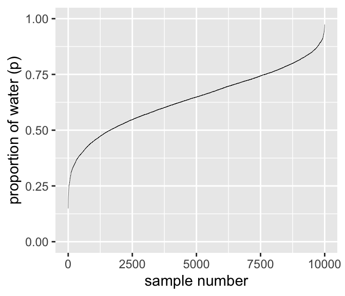
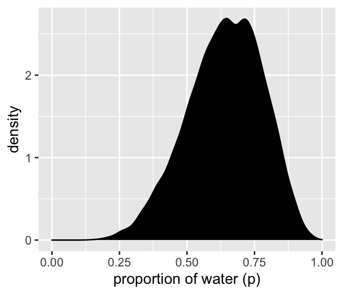
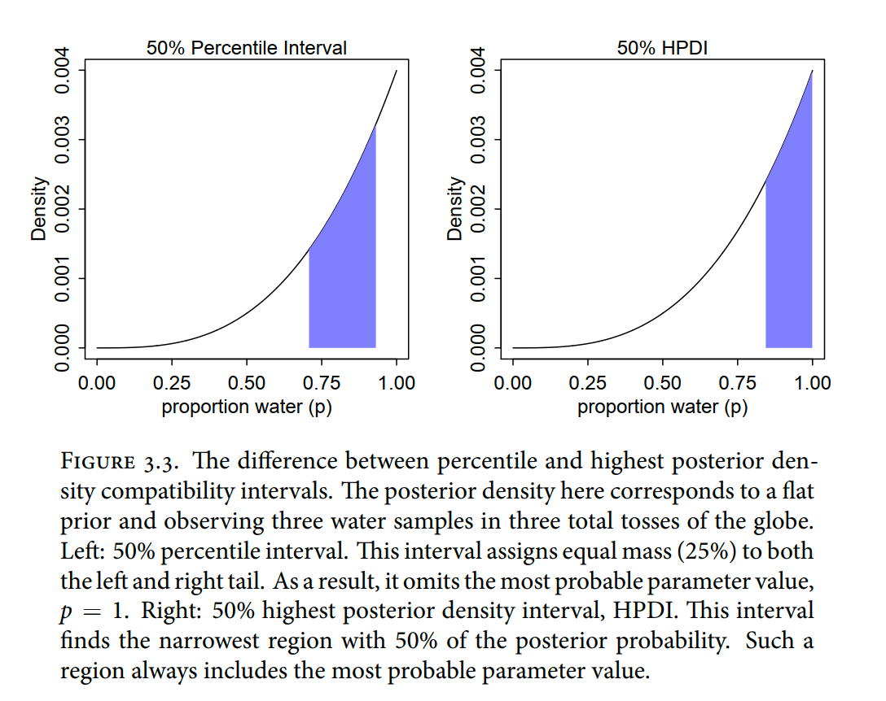
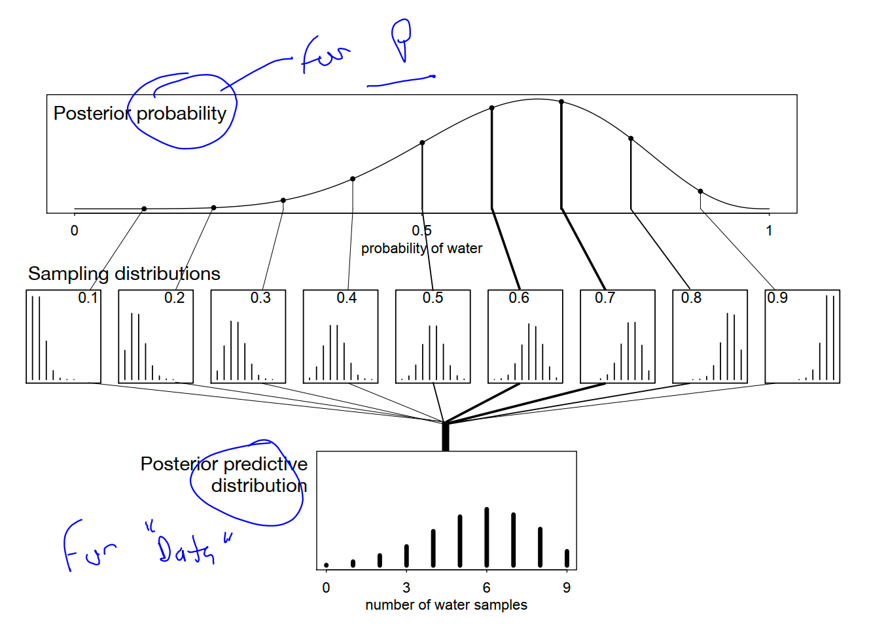

22 Chapter 3. Sampling the Imaginary (posterior)
I aim to return to do more soon.
This chapter teaches you basic skills for working with samples from the posterior distribution.
the ‘best’ estimation approach, MCMC, doesn’t even give you an explicit analytical posterior, just a sample from it
this approach also requires less math and yields more flexibility … easy to produce any object of interest.
In a population of 100,000 people, 100 of them are vampires. (2) Of the 100 who are vampires, 95 of them will test positive for vampirism. (3) Of the 99,900 mortals, 999 of them will test positive for vampirism
counts rather than probabilities, is often called the frequency format or natural frequencies. Why a frequency format helps people intuit the correct approach remains contentious.
vampirism example at the start of this chapter has the same logical structure as many different signal detection problems: (1) There is some binary state that is hidden from us; (2) we observe an imperfect cue of the hidden state; (3) we (should) use Bayes’ theorem to logically deduce the impact of the cue on our uncertainty
Suppose that the probability of a positive finding, when an hypothesis is false, is Pr(sig|false) = 0.05. That’s the false-positive rate, like the 5% of conventional significance testing. Finally, we have to state the base rate at which hypotheses are true. Suppose for example that 1 in every 100 hypotheses turns out to be true -
So a positive finding corresponds to a 16% chance that the hypothesis is true
You can shrink the false-positive rate to 1% and get this posterior probability up to 0.5, only as good as a coin flip. The most important thing to do is to improve the base rate, Pr(true), and that requires thinking, not testing.
DR: Or why not shrink the false positive rate even further? In principle you could demand more and more exacting standards, if worse and worse hypotheses are tested. This sort-of provides some justification for ‘strict standard NHST’.
But personally, I suspect that in social science the base rate is much higher because people often test fairly obvious things. (And also, a lot is about measurement, not 0/1 testing in a sparse universe.)
22.1 3.1. Sampling from a grid-approximate posterior
Globe-tossing model. Analytically, we started with a prior, updated it on the data, and got a posterior; see extensive plots of this in the last chapter. We also did this (for demonstration) with the grid-approximation approach.
This is almost as in the last chapter, with slightly different naming of things, so I collapse it here
Code
# how many grid points would you like?
n <- 1001
n_success <- 6
n_trials <- 9
(
d <-
tibble(p_grid = seq(from = 0, to = 1, length.out = n),
# note we're still using a flat uniform prior
prior = 1) %>%
mutate(likelihood = dbinom(n_success, size = n_trials, prob = p_grid)) %>%
mutate(posterior = (likelihood * prior) / sum(likelihood * prior))
)# A tibble: 1,001 × 4
p_grid prior likelihood posterior
<dbl> <dbl> <dbl> <dbl>
1 0 1 0 0
2 0.001 1 8.37e-17 8.37e-19
3 0.002 1 5.34e-15 5.34e-17
4 0.003 1 6.07e-14 6.07e-16
5 0.004 1 3.40e-13 3.40e-15
6 0.005 1 1.29e-12 1.29e-14
7 0.006 1 3.85e-12 3.85e-14
8 0.007 1 9.68e-12 9.68e-14
9 0.008 1 2.15e-11 2.15e-13
10 0.009 1 4.34e-11 4.34e-13
# … with 991 more rowsNext we sample from the 1000 probabilities in the grid d with weights equal to the posteriors (d$posterior), generating a tibble of 10,000 samples (sample).
10k samples from the grid posterior
# how many samples would you like?
n_samples <- 1e4
# make it reproducible
set.seed(3)
samples <-
d %>%
sample_n(size = n_samples, weight = posterior, replace = T)
glimpse(samples)Rows: 10,000
Columns: 4
$ p_grid <dbl> 0.564, 0.651, 0.487, 0.592, 0.596, 0.787, 0.727, 0.490, 0.7…
$ prior <dbl> 1, 1, 1, 1, 1, 1, 1, 1, 1, 1, 1, 1, 1, 1, 1, 1, 1, 1, 1, 1,…
$ likelihood <dbl> 0.22408531, 0.27179502, 0.15128823, 0.24557832, 0.24825668,…
$ posterior <dbl> 0.0022408531, 0.0027179502, 0.0015128823, 0.0024557832, 0.0…Next we plot the samples.
*DR: I played around with this. Rather than getting the arbitrary zigzag, I first sort by probability of water (p_grid). This yields a smooth curve, where a shallower line and greater horizontal distance means ‘more samples in this area’.
Numbering and plotting samples
samples %>%
arrange(p_grid) %>%
mutate(sample_number = 1:n()) %>%
ggplot(aes(x = sample_number, y = p_grid)) +
geom_line(size = 1/10) +
scale_y_continuous("proportion of water (p)", limits = c(0, 1)) +
xlab("sample number")
We’ll make the density in the right panel with geom_density().
Code
samples %>%
ggplot(aes(x = p_grid)) +
geom_density(fill = "black") +
scale_x_continuous("proportion of water (p)", limits = c(0, 1))
:::
It’s a bit lumpy because 10k samples isn’t enough. But I won’t bother with the larger number of samples here.
22.2 3.2. Sampling to summarize
interval of posterior probability, such as the ones we are working with [below],
We’re going to call it a compatibility interval instead, in order to avoid the unwarranted implications of “confidence” and “credibility.”
a range of parameter values compatible with the model and data
All you’ve done so far is crudely replicate the posterior density you had already computed. … next it is time to use these samples to describe and understand the posterior.
At least with 1 dimensional data, it’s easy to ask and answer very specific questions of the posterior:
Intervals of defined boundaries
Suppose I ask you for the posterior probability that the proportion of water is less than 0.5.
Here, you could do this simply from the grid approximation calculation
# A tibble: 1 × 1
sum
<dbl>
1 0.171However: grid approximation isn’t used much
since grid approximation isn’t practical in general, it won’t always be so easy. Once there is more than one parameter in the posterior distribution
… so instead we will practice taking samples from the posterior.
similarly add up all of the samples below 0.5, but also divide the resulting count by the total number of samples.
Kurz offers three tidyverse ways of coding this calculation, which may be useful in different circumstances:
filter and summarise
samples %>%
filter(p_grid < .5) %>%
summarise(sum = n() / n_samples)# A tibble: 1 × 1
sum
<dbl>
1 0.162filter and summarise
#note 'n_samples' was previously defined herecount and mutate with divide
samples %>%
count(p_grid < .5) %>%
mutate(probability = n / sum(n))# A tibble: 2 × 3
`p_grid < 0.5` n probability
<lgl> <int> <dbl>
1 FALSE 8377 0.838
2 TRUE 1623 0.162Summarize a logical condition
#And an even trickier approach for the same is to insert the logical statement `p_grid < .5` within the `mean()` function.
samples %>%
summarise(sum = mean(p_grid < .5))# A tibble: 1 × 1
sum
<dbl>
1 0.162We can do similar for intervals (skipped here)
To determine the posterior probability between 0.5 and 0.75, you can use
&withinfilter().
Intervals of defined mass
Percentile intervals (PI) “assign equal probability mass to each tail …”
But in this example, it ends up excluding the most probable parameter values, near p = 1. So in terms of describing the shape of the posterior distribution-which is really all these intervals are asked to do—the percentile interval can be misleading.
highest posterior density interval (HPDI): “the narrowest interval containing the specified probability mass”
right-hand plot in Figure 3.3 displays the 50% HPDI is

Which to use?
HPDI is more computationally intensive than PI and suffers from greater simulation variance, which is a fancy way of saying that it is sensitive to how many samples you draw from the posterior. It is also harder to understand and many scientific audiences will not appreciate its features, hile they will immediately understand a percentile interval, as ordinary non-Bayesian intervals are typically interpreted (incorrectly) as percentile intervals
But whether you use a Bayesian interpretation or not, a 95% interval does not contain the true value 95% of the time. The history of science teaches us that confidence intervals exhibit chronic overconfidence.
The 95% is a small world number
Kurz plots these intervals for our example, but the code he uses first is simply taking an arbitrary part of the computed distribution, not calculating anything. I’ll skip it.
DR: Hmmm, how is HPDI computed? … I assume it iterates over intervals, draws observations from within this interval from the posterior sample and sums the probability mass until it settles on the ‘best one’?
3.2.3. Point estimates
Given the entire posterior distribution, what value should you report? The Bayesian parameter estimate is precisely the entire posterior distribution
it is very common for scientists to report the parameter value with highest posterior probability, a maximum a posteriori (MAP) estimate
Why not report the posterior mean or median?
repeating this calculation for every possible decision, using
Loss functions: very cool!
One principled way to go beyond using the entire posterior as the estimate is to choose a loss function. A loss function is a rule that tells you the cost associated with using any particular point estimate. While statisticians and game theorists have long been interested in loss functions, and how Bayesian inference supports them, scientists hardly ever use them explicitly. The key insight is that different loss functions imply different point estimates.
loss <- sapply( p_grid , function(d) sum( posterior*abs( d - p_grid ) ) )
p_grid[ which.min(loss) ]
Different loss functions nominate different point estimates. The two most common examples are the absolute loss as above, which leads to the median as the point estimate, and the quadratic loss (d - p) 2 , which leads to the posterior mean (mean(samples)) as the point estimate
Therefore the implied loss function is highly asymmetric, rising sharply as true wind speed exceeds our guess, but rising only slowly as
true wind speed falls below our guess. In this context, the optimal point estimate would tend to be larger than posterior mean or median. Moreover, the real issue is whether or not to
order an evacuation. Producing a point estimate of wind speed may not be necessary at all.
In this context, the optimal point estimate would tend to be larger than posterior mean or median. Moreover, the real issue is whether or not to order an evacuation. Producing a point estimate of wind speed may not be necessary at all.
DR: Reinforcement learning could be better still?
You might argue that the decision to make is whether or not to accept an hypothesis. But the challenge then is to say what the relevant costs and benefits would be, in terms of the knowledge gained or lost
Usually it’s better to communicate as much as you can about the posterior distribution, as well as the data and the model itself, so that others can build upon your work
3.3. Sampling to simulate prediction
combine sampling of simulated observations, as in the previous section, with sampling parameters from the posterior distribution.
basic model checks

Posterior predictive distribution
Combining simulated observation distributions for all parameter values (not just the ten shown), each weighted by its posterior probability, produces the posterior predictive distribution
This distribution propagates uncertainty about parameter to uncertainty about prediction
out. If instead you were to use only a single parameter value to compute implied predictions, say the most probable value at the peak of posterior distribution, you-d produce an overconfident distribution of predictions,
w <- rbinom( 1e4 , size=9 , prob=samples ) The symbol samples above is the same list of random samples from the posterior distribution that you-ve used in previous sections. For each sampled value, a random binomial observation is generated
Now the simulated predictions appear less consistent with the data, as the majority of simulated observations have fewer switches than were observed in the actual sample. This is consistent with lack of independence between tosses of the globe, in which each toss is negatively correlated with the last. Does this mean that the model is bad? That depends
In the long run, even the wrong model we’ve used throughout the chapter converge on the correct proportion. But it will do so more slowly than the posterior distribution may lead us to believe.
posterior predictive checks
3.3.2.2. Is the model adequate?
DR: I.e., Does the model and its estimates predict a reasonable (sampled) distribution
Multilevel models
multilevel model. Multilevel models-also known as hierarchical, random effects, varying effects, or mixed effects models
Cross-validation and information criteria measure overfitting risk and help us to recognize it. Multilevel models actually do something about it. What they do is exploit an amazing trick known as partial pooling
Model comparison and prediction.
Bayesian data analysis provides a way for models to learn from data. But when there is more than one plausible model-and in most mature fields there should be-how should we choose among them? One answer is to prefer models that make good predictions. This answer creates a lot of new questions, since knowing which model will make the best predictions seems to require knowing the future. We’ll look at two related tools, neither of which knows the future: cross-validation and information criteria